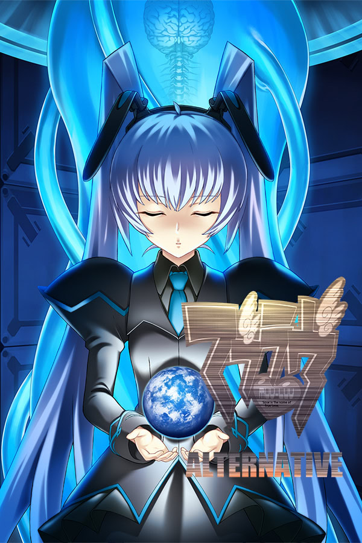

Muv-Luv Alternative
Tags
- Fighting Protagonist, 3.0
- Onna Bugeisha Heroine, 3.0
- Life and Death Drama, 3.0
- War, 3.0
- Mecha Pilot Heroine, 3.0
- Military, 2.9
- Mecha, 2.9
- Science Fiction, 2.9
- Flashback, 2.9
- Mecha Combat, 2.9
- Mecha Pilot Protagonist, 2.9
- Military Base, 2.9
- Action, 2.9
- Male Protagonist, 2.8
- Soldier Protagonist, 2.8
- Post Apocalyptic Earth, 2.8
- Terrorized by Monsters, 2.7
- Ponytail Heroine, 2.7
- Politics, 2.7
- Genius Support Character, 2.7
- Dystopia, 2.7
- Friendship, 2.7
- Proactive Protagonist, 2.7
- Low Sexual Content, 2.6
- Mystery, 2.6
- Apocalypse, 2.6
- Officer Protagonist, 2.6
- Future Forecasting, 2.5
- Adult Heroine, 2.5
- Coming-of-Age Drama, 2.5
- Thriller, 2.4
- Fictional Modern Day Japanese Town, 2.4
- Heroine with Catsuit, 2.4
- Fear of Death, 2.3
- Hard Science Fiction, 2.2
- Donkan Protagonist, 2.0
- Heroine with Big Breasts, 2.0
- Mentor Support Character, 2.0
- Pragmatic Heroine, 2.0
- Drastic Character Development (positive), 1.8
- Impulsive Protagonist, 1.5
- Genius Heroine, 1.0
- Snow, 1.0
- Transfer Student Heroine, 0.2
- Comedy, 0.1
"Dungeon without light is almost dark."

Description
"A destiny tossed about, in an insane world--- A flame of life blazing forth, in a dying world--- And now, one more future that is spun--- This is the alternative ending unable to be told before: A very great, a very tiny, a very precious... Tale of love and courage." Muv-Luv Alternative continues the story of Shirogane Takeru after the events of the original Muv-Luv. This is a tale of a love so deep it breaks all barriers; about courage in the face of adversity and overcoming hardships. Takeru encounters insurmountable odds while his entire world is turned upside down around him.
2.30-90 | privacy & content policy | about us | security | advertising | contact@vndb.org